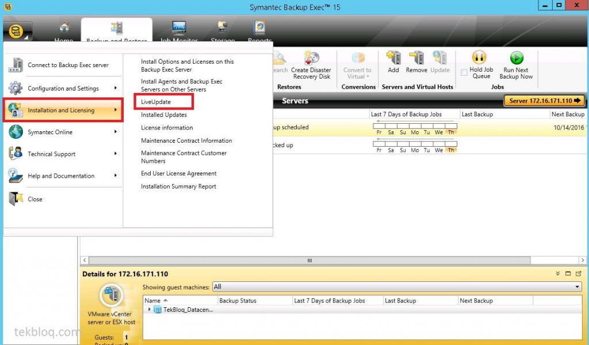
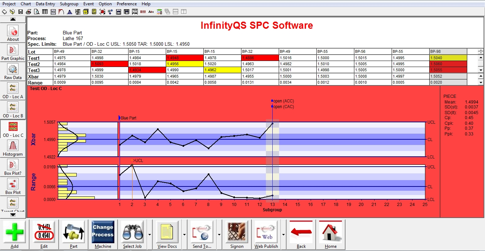
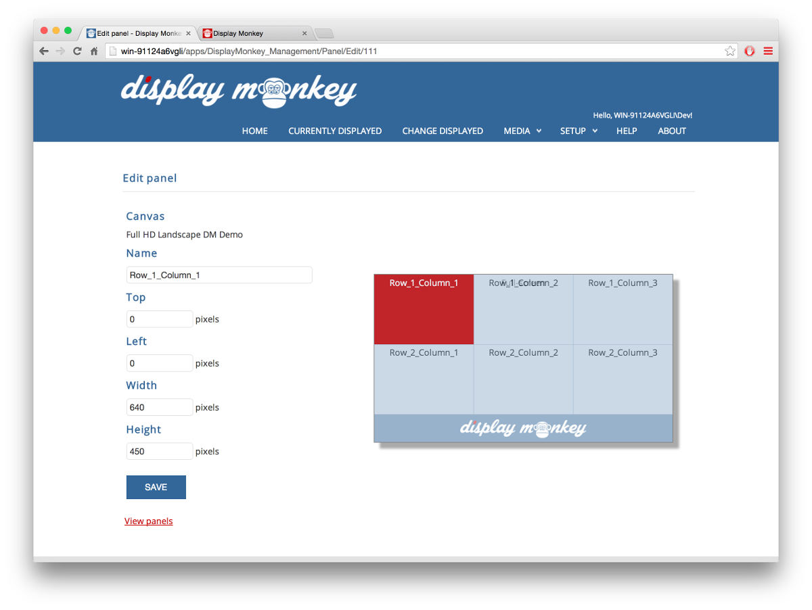

Multisorb Technologies, the opposite of the other two experiences that I have had. Being an older, more established company there was a different feeling compared to being in a small start-up like I had been a part of before. This is not a software company by any means, as its main focus is developing and manufacturing absorbents for packaging. When I was brought into this company, my first day there was spent building my own desktop to be used for the rest of the summer (I found this to be pretty funny). I had been brought into a newly purchased company with a "rotating" staff, which is how I would explain it. For the summer that I was there the turn-over rate was very high. My first task was to upgrade every user workstation from Windows 7/8 to Windows 10 in preparation for a complete migration from on-premises everything to Office 365 and Azure AD. Scheduling on average three computer upgrades per day while working on cleaning up the Active Directory was the everyday routine for a while. These upgrades were tedious and exposed a ton of issues with compatibility and troubleshooting with the companies that created these products along with a lot of natural problem solving to get people up and running with their workstations again. In the meantime, while I was doing these upgrades there were underlying issues like a messy active directory, email server, and network storage. The new CIO and myself tackled all of these things together and dove into each problem as quickly as possible to clean up the mess that we had been thrown at. We realized that everyone in the company wanted to have their own mapped network drives before so there were many batch scripts that strayed from the main VB login script to give people custom drive mapping lists. This was unacceptable in our eyes since we liked to have the ability to roll out script changes to everyone at once (what if a server name was changed and everyone had their own scripts - a lot of changes to make vs only changing one script - a simple example). This was an easy fix and it ended up paying off when we ran into a big problem since old Dell laptops had a service running that would detect when the laptop was dropped and stopped the hard-drive to prevent data loss on drops. When I converted all of these laptops to solid state drives, this service was freezing the windows explorer. The fix for this was completed in one day by rolling out a command in the VB script that disabled the service if it was found running on the laptop on the next login. The VB script also was aware of user properties so we were able to create different functionality based on department (marketing received drive mappings for the network shares with marketing files). Among the other action items on a long list of things that needed to be fixed were backups. Server backups were still taking place on tape when the new CIO was brought in so we worked together to turn these into off-site physical and cloud backups. I was in charge of creating the off-site physical machines built out of old server grade desktop equipment and tucked away in the various properties owned by Multisorb but not in the same physical building as the respective server rooms for each location.

These were being managed by BackupExec. Revisiting the infrastructure upgrade - there was a tricky part that needed to be taken care of for a clean migration to Office 365 and Azure AD, which was the fact that we had three separate domains under the main multisorb domain. Each one of the three locations had their own domain to log into, connect servers to, etc... We worked together with a migration company to move these users and machines over to the main multisorb domain and I was the 'boots on the ground' for this process working directly with the company. After this was taken care of we were on our way to being able to move all operations to the cloud as one! Jumping back in time to the winter before being brought into Multisorb, I was working at Sedara Security while being contracted out to do SharePoint development/research for Multisorb as they were inevitably going to be moving to Office 365/SharePoint Online. This research paid off as I was brought in the next summer, completed all of the upgrades and migration previously talked about, and started to get the ball rolling with the Multisorb SharePoint site branded 'MultiShare'. This includes building out the main landing page, a page for each department with shared and public libraries (and lists with and without work-flows for custom functionality), and most importantly linking all of the web applications that Multisorb uses as internal tools to the IT page by either embedding them or linking directly to them with documentation build into the SharePoint site. Switching back to the summer of the first internship, towards the end of my time there we were investigating a bottleneck caused by old machines being used as quality assurance data input stations. The CIO had ordered all aluminum fan-less micro desktops which were to replace old air-filtered dell industrial boxes. The issue with this upgrade was that the old machines had Windows 7 with a custom local computer group policy restricting their functionality down to the SPC station software (InfinityQS).

The new machines that were much better, shipped with windows 10, which had different group policy properties. So being mindful of the future, since break fixes and necessary changes will need to happen to all of them at once, I tackled the task of creating a GPO for these SPC station machines to be dumped into without any pre-configuration and be assembly-line ready. This was a long process of testing new group policy on machines before they were sent out and I am happy to say that now when a new desktop gets ordered, all the IT staff has to do is install the software and drop it in an OU. Apply the batch script to map necessary drives and launch the application upon login and all of the configuration for a new SPC station is done! Saving a lot of time for the IT staff in the future and, arguably more importantly, standardizing the process and outcome of machine deployment. When I left this company at the end of that summer everyone had become like family to me, considering that I had to cross paths with everyone using a workstation at that company I had interacted with all of them and made a bunch of great connections with employees there. More importantly the CIO and I got along really well and he was eager to get me to come back the following winter in-between semesters during my last year of school, so that is what happened.
The following winter held many more challenges and I had a great time learning new things and developing internal business tools that are being used to this day! The first task being new digital-signage that would be rotating through views in the production areas of each product that Multisorb packages and ships out. The most important information (how many more items of each type needed to be prepared for shipping for which company and their deadlines for example) was displayed on a large TV driven by Intel compute sticks that were talking to an open source project that I implemented a custom version of called DisplayMonkey.

As you can imagine this application took advantage of Microsoft SQL server databases with procedures creating tables that Power Bi and SSRS created visual representations of for shift leaders and workers to view. The majority of the work here was writing SQL code (procedures) to grab the useful information out of the massive ERP system database to be utilized later. I originally started writing a URL rotator that would have just displayed the SSRS reports in an IFrame from the reports Internet Explorer view but we later decided that going with the DisplayMonkey tool would be easier for the CIO to manage after I had left even though I built in a lot of good functionality taking advantage of JSON databases, PHP, and HTML/CSS/JS (this project is viewable on my github page in the URL-Rotator repo). I also implemented SpiceWorks online and on-prem for the IT staff to start using as a ticketing system instead of employees walking to the IT department when something breaks. This was then embedded into a SharePoint page and uses active directory for authentication so all the employee has to do is create a ticket in SharePoint by telling the IT staff the problem, a description, and provide any attachments if they would like. The most interesting project that I worked on in my time there during the winter was the Active Directory Tool. This web application is capable of allowing users with granted access the ability to create a new user in the Azure AD, Office 365, assign them to a team in SharePoint via group in AD, provide all personal information, and notify the IT team that they have been created and to follow up with any processes that the IT/ERP team might need to do (get a computer ready for them or create them an account in Infor XA, since I couldn't work with any API for that application - there is a lot of manual set up that takes place). In recognizing that there was a high turnover rate and a lot of miscommunication between the HR staff and the IT department about new hires, this streamlined the process of on-boarding allowing them to directly do it when hiring new people. This tool also is capable of unlocking accounts if they have become locked out, reseting passwords if the user forgets or whatever the reason may be, and disabling accounts if a user has been terminated. This project is on my github account under the repo named ActiveDirectoryEditor, and is created using the .Net MVC framework. This brings us to present day with ongoing support of those tools and more SharePoint development is on the horizon.


![]()